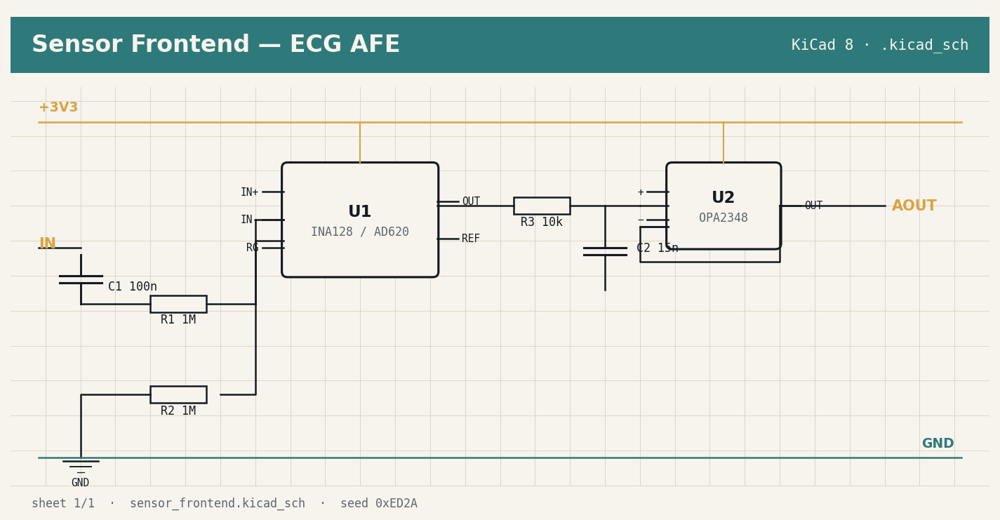

KiCad 8 · S-expression · .kicad_sch / _pcb
ECG analog front-end
Clinical-grade differential front-end — INA128 instrumentation amp, 1.6 Hz input DC-block, 1.06 kHz anti-alias LPF, OPA2348 buffer, ESD clamps on every patient node. Emitted as a schema-valid KiCad 8 project: .kicad_pro / .kicad_sch / .kicad_pcb + .net netlist + BOM + fab summary JSON with stack-up and drill statistics.